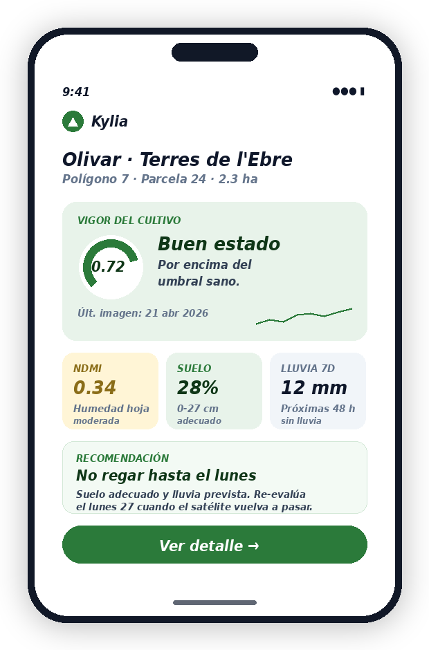
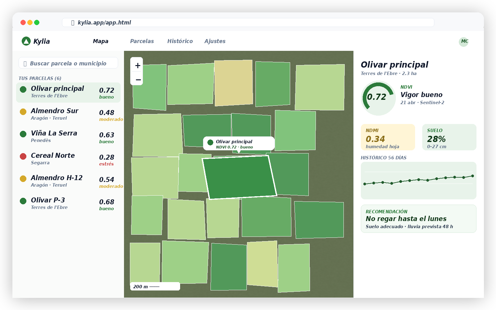
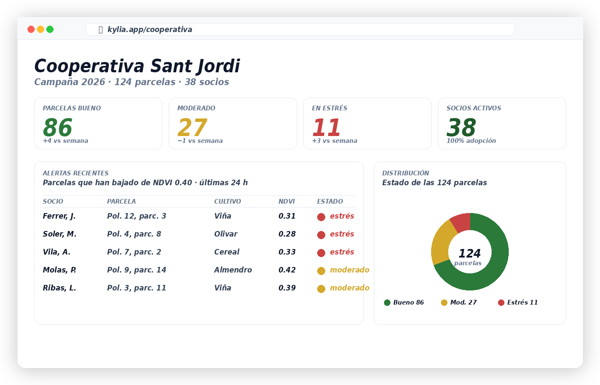

01
Decisiones a ciegas
El agricultor decide cuándo regar, abonar o tratar sin conocer el estado real del cultivo. El error cuesta producción, agua y fitosanitarios.
Vigor del cultivo, humedad del suelo y recomendación de riego para cualquier parcela SIGPAC. En el móvil, en segundos. Gratis hasta 20 hectáreas.

Abres Kylia, haces clic en tu campo y ves el estado de hoy: vigor, humedad, histórico y qué hacer. Sin dashboards confusos, sin formación previa.

Geometría oficial del MAPA, actualizada cada campaña. El mismo recinto que usa la PAC.
NDVI y NDMI de Sentinel-2 agregados sobre la parcela entera. Humedad del suelo por capas con DWD ICON.
"Regar el martes" o "no regar esta semana". Adaptada al cultivo declarado — tomate, olivar, cereal, viña.
Los datos satelitales existen y son libres desde hace años. Pero la información llega solo a las explotaciones grandes que pueden pagar software agronómico especializado. El resto del campo — la mayoría — decide riego, fertilización y tratamientos sin un solo indicador objetivo.
El agricultor decide cuándo regar, abonar o tratar sin conocer el estado real del cultivo. El error cuesta producción, agua y fitosanitarios.
Las plataformas existentes cobran por hectárea, exigen formación y sirven a explotaciones industriales. El pequeño y mediano se queda fuera.
Las cooperativas no ven el estado agregado de sus socios. Cuando alguien llama preguntando ya es tarde para actuar.
Copernicus, SIGPAC y los modelos meteorológicos públicos son gratis. La información está ahí — faltaba un producto que la hiciera útil.
Kylia hace toda la cadena de valor en segundos: localizar la parcela oficial, pedir la última imagen del satélite, limpiar nubes, calcular los índices agronómicos y devolver una recomendación adaptada al cultivo.
Haces clic en el mapa sobre tu campo y Kylia detecta el recinto SIGPAC oficial: provincia, polígono, parcela, recinto y superficie. Sin dibujar, sin coordenadas, sin registros.
Consultamos Sentinel-2 sobre la geometría real de la parcela a 10 m de resolución. Filtramos nubes, sombras y datos no válidos. Agregamos toda la parcela — no muestreamos un píxel suelto.
Vigor del cultivo, agua en la hoja, humedad del suelo por capas y una frase con lo que hacer — adaptada al cultivo declarado. Todo en el móvil, en segundos.
Kylia está construido para escalar desde la parcela individual hasta la red de una cooperativa, y para ser una propuesta defendible ante inversores en AgTech.
Pensado para el agricultor que cultiva lo suyo, no para el que factura millones. Cero curva de aprendizaje: si sabes usar WhatsApp, sabes usar Kylia.
Ofrece a tus socios una herramienta profesional sin que tengan que comprar hardware ni aprender GIS. Tú ves el conjunto, ellos ven lo suyo.

Mercado enorme, datos abiertos que antes eran de pago, coste marginal por usuario cercano a cero, ventana regulatoria favorable. Tres líneas de monetización ya identificadas: B2C Pro, B2B cooperativas y B2G/Enterprise.
Cada funcionalidad responde a una pregunta concreta del día a día. Nada de complejidad de relleno.
NDVI por parcela — vigor calculado sobre toda la geometría SIGPAC, no un píxel suelto.
NDMI y humedad del suelo por capas. Detecta estrés hídrico antes de que se vea a simple vista.
Histórico rodante de 8 semanas con sparkline. Tendencia clara de un vistazo.
Recomendación en una frase, adaptada al cultivo declarado — olivar, cereal, viña, tomate…
Alertas por email/Telegram cuando una parcela entra en estrés. En roadmap para Q2.
Panel agregado para cooperativas y ADV. API para conectar con tu ERP o PAC.
Kylia no se inventa los datos. Todo se apoya en fuentes públicas europeas, con trazabilidad completa.
No dependemos de proveedores privados de imagen satelital. Todo nuestro stack se apoya en infraestructura pública europea de largo plazo.
Programa espacial europeo (ESA/UE). Imagen multiespectral gratuita a 10 m cada ~5 días desde 2015.
Registro oficial español de parcelas agrícolas. Vector tiles abiertos, mismos datos que usa la PAC.
Humedad del suelo por capas y meteo horaria. API pública sin clave, limitada a usos razonables.
Funciones serverless en Vercel. Sin base de datos propia en esta fase. Coste marginal cero.
Agregación de NDVI/NDMI sobre la geometría exacta de la parcela, con filtrado de nubes SCL.
HTML + Leaflet. Cero instalación. Funciona en cualquier móvil u ordenador.
Comparación honesta frente a las alternativas más habituales en el mercado español.
| Característica | Kylia | Plataformas agronómicas premium | Sensores IoT en campo | Nada (decidir a ojo) |
|---|---|---|---|---|
| Coste inicial | 0 € | Licencia anual + setup | €€€ por estación | 0 € |
| Coste por hectárea | Sin coste por hectárea | € / ha / año | Depende del despliegue | — |
| Hardware en campo | No necesario | Opcional | Obligatorio | — |
| Datos satelitales por parcela | NDVI + NDMI · 10 m | Sí | No | No |
| Geometría oficial SIGPAC | Sí | Parcial | — | — |
| Curva de aprendizaje | Minutos | Días o semanas | Requiere técnico | — |
| Funciona sin conexión rural | Móvil + internet móvil basta | Sí | Red propia o LoRa | — |
| Alertas automáticas | Incluidas en Pro | Sí | Sí | — |
| Plan gratuito real | Hasta 20 ha, para siempre | Solo trial | No | — |
Kylia está en fase piloto. Preferimos no inventarnos testimonios: en su lugar, te explicamos el por qué del producto y abrimos plazas reales para quienes quieran probarlo antes que nadie.
Los datos satelitales llevan años siendo gratis. Pero solo llegan al agricultor si alguien los traduce a una frase útil. Eso es lo que quiero resolver.
Plaza piloto cooperativa
3–5 cooperativas probarán Kylia gratis durante la campaña 2026, a cambio de feedback.
Plaza early-adopter
¿Agricultor profesional curioso? Pruébalo ya y dinos qué cambiarías — te escuchamos.
Tarifas planas por tramo (de superficie o de socios), nunca €/ha lineal. Precio público hasta el último tier — no "consulta a ventas". Si cobramos lo justo, podemos seguir mejorando el producto.
Todos los planes incluyen los datos oficiales SIGPAC y Sentinel-2. IVA no incluido.
Construcción abierta. Este es el plan actual — las fechas son estimaciones, no promesas, pero nos gusta publicarlas.
Tres razones estructurales que hacen que este proyecto tenga sentido ahora y no hace cinco años.
Regar en el momento correcto, con el volumen correcto, es la palanca ambiental más grande de la agricultura mediterránea. Kylia ayuda a no regar de más — ni de menos.
Nos apoyamos en infraestructura europea pública (Copernicus, SIGPAC). Los datos agrícolas del campo español no terminan en servidores privados fuera de la UE.
Agricultura de precisión no es un lujo de grandes explotaciones. Kylia pone herramientas profesionales en el móvil del pequeño agricultor, gratis.
AgTech europeo, sin hardware, apoyado en infraestructura pública. Coste marginal por usuario cercano a cero.
Si eres cooperativa, ADV o agricultor profesional, probar Kylia esta campaña es gratis. Déjanos tu contacto y te escribimos en menos de 48 h.
Respuesta en menos de 48 h · cero spam · puedes darte de baja con un clic · tus datos se quedan en Europa.
Sin registro, sin tarjeta, sin instalación. Abre Kylia, elige tu parcela y mira qué te dice — 30 segundos.
Funciona en tu móvil · cualquier parcela SIGPAC de España